shiro架构
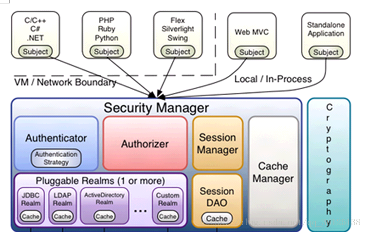
- subject：主体，可以是用户也可以是程序，主体要访问系统，系统需要对主体进行认证、授权。
- securityManager：安全管理器，主体进行认证和授权都 是通过securityManager进行。
- authenticator：认证器，主体进行认证最终通过authenticator进行的。
- authorizer：授权器，主体进行授权最终通过authorizer进行的。
- sessionManager：web应用中一般是用web容器对session进行管理，shiro也提供一套session管理的方式。
- SessionDao： 通过SessionDao管理session数据，针对个性化的session数据存储需要使用sessionDao。
- cache Manager：缓存管理器，主要对session和授权数据进行缓存，比如将授权数据通过cacheManager进行缓存管理，和ehcache整合对缓存数据进行管理。
- realm：域，领域，相当于数据源，通过realm存取认证、授权相关数据。
注意：在realm中存储授权和认证的逻辑。
- cryptography：密码管理，提供了一套加密/解密的组件，方便开发。比如提供常用的散列、加/解密等功能。比如 md5散列算法。
shiro认证流程

shiro授权流程
对subject进行授权，调用方法IsPermitted(“permission串”)
SecurityManager执行授权，通过ModularRealmAuthorizer执行授权
ModularRealmAuthorizer执行realm(自定义)从数据库查询权限数据 调用realm的授权方法:doGetAuthorizationInfo
Realm从数据库查询权限数据，返回ModularRealmAuthorizer
ModularRealmAuthorizer调用PermissionResolver进行权限串比对
如果比对后，isPermitted中“permission串”在realm查询到权限数据中，说明用户访问permission串有权限，否则没有权限，抛出异常。
shiro与项目整合
在web.xml中配置shiro的filter
在web系统中，shiro也通过filter进行拦截，filter拦截成功后将操作权交给spring中配置的filterChain（过滤链）
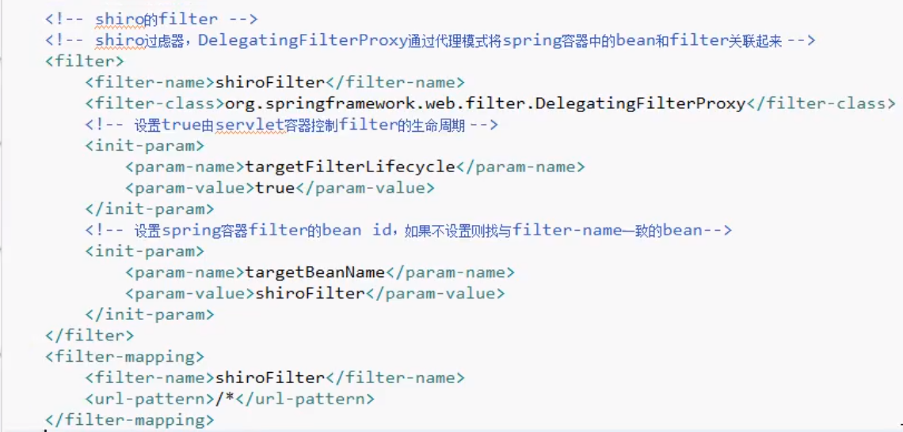
在spring中配置filter
在applicationContext-shiro.xml 中配置web.xml中filter对应spring容器中的bean
<bean id="shiroFilter" class="org.apache.shiro.spring.web.ShiroFilterFactoryBean">
<property name="securityManager" ref="securityManager"/>
<!-- loginUrl认证提交地址，如果没有认证将会请求此地址进行认证，请求此地址将由formAuthenticationFilter进行表单认证 -->
<property name="loginUrl" value="/login.do"/>
<!-- 认证成功后统一跳转到first.action,建议不配置,因shiro认证成功后会自动跳转到上一个请求路径-->
<property name="successUrl" value="/index.do" />
<!-- 指定无权限的访问页面 -->
<property name="unauthorizedUrl" value="/refuse.jsp"/>
<!-- 过虑器链定义，从上向下顺序执行，一般将/**放在最下边 -->
<property name="filterChainDefinitions">
<value>
<!-- 过滤器从上向下顺序执行 -->
<!-- 对静态资源设置匿名访问 -->
/images/** = anon
/js/** = anon
/css/** = anon
/favicon.ico = anon
<!--请求login.action地址,shiro清除session-->
/logout.do = logout
<!--商品查询权限-->
<!--/item/editItem.action = perms[item:update]-->
<!--/item/edit.action = perms[item:add]-->
<!-- 所用的url必须都认证通过后才可访问 -->
/** = authc
</value>
</property>
</bean>
<!-- 7.2:安全管理器 -->
<bean id="securityManager" class="org.apache.shiro.web.mgt.DefaultWebSecurityManager">
<property name="realm" ref="userRealm"/>
<!--缓存器-->
<property name="cacheManager" ref="cacheManager"></property>
<!-- 注入session管理器 -->
<property name="sessionManager" ref="sessionManager"></property>
</bean>
<!-- 7.3:自定义 realm -->
<bean id="userRealm" class="com.chxf.user.realm.MyRealm">
<!-- 将凭证匹配器设置到realm中 -->
<property name="credentialsMatcher" ref="credentialsMatcher">
</property>
</bean>登录
1. 原理
使用FormAuthenticationFilter过滤器实现，原理如下：
将用户没有认证时，请求loginURL进行认证，用户身份和用户密码提交数据到loginURL
FormAuthenticationFilter拦截住取出request中的username和password（两个参数名称是可以配置的）
FormAuthenticationFilter调用realm传入一个token（username和password）
Shiro中过滤器
Realm认证时根据username查询用户信息（在Activeuser中存储，包括userid，usercode，username，menus）
如果查询不到，realm返回null，FormAuthenticationFilter向request域中填充一个参数（记录了异常信息）
*2. 实现 *
(登录提交地址，和applicationContext**-shiro.xml中配置的loginURL一致）
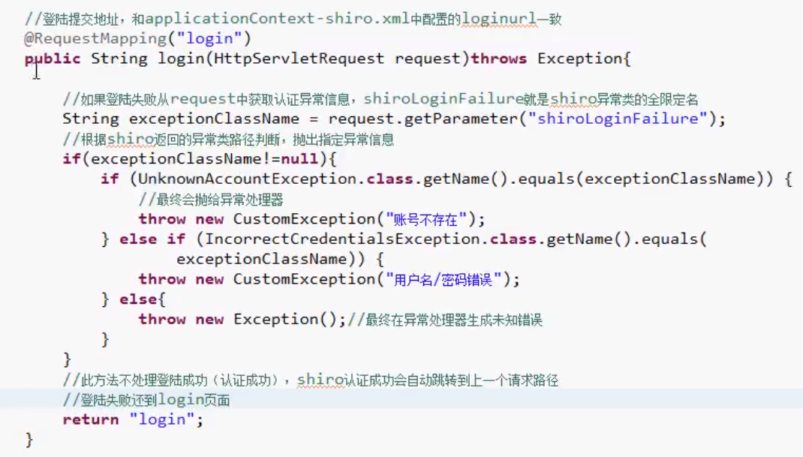
3. 认证拦截过滤器
在applicationContext-shiro.xml中配置
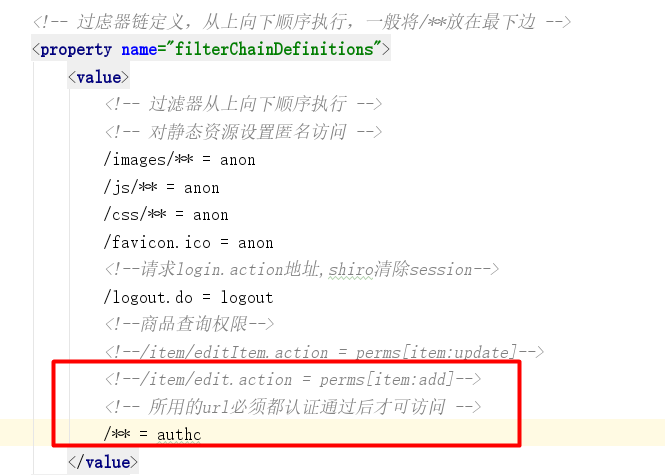
退出
使用logoutFilter
不用我们去实现退出，只要去访问一个退出的URL（该URL是可以不存在），有logoutFilter拦截住，清除session 在applicationContext-shiro.xml中配置
logout.action = logout
认证信息在页面显示
- 认证后用户菜单在首页显示
- 认证后用户信息在页头显示
修改realm设置完整认证信息
Realm从数据库查询用户信息，将用户菜单，usercode，username等 设置在SimpleAuthenticationInfo中 此处使用静态数据模拟实现
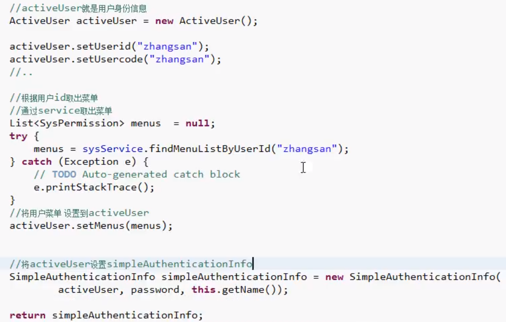
//从shiro的session中取出activeUser
Subject subject = SecurityUtils.getSubject();
//取出身份信息
ActiveUser activeUser = (ActiveUser) subject.getPrincipal();
//通过model传到页面
Model.addAtribute(“activeUser”,activeUser);
授权过滤器测试
使用permissionsAuthorizationFilter
在applicationContext-shiro.xml中配置
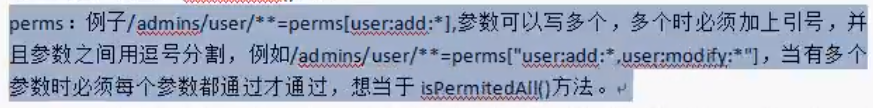
测试流程:
- 在applicationContext-shiro.xml中配置filter规则
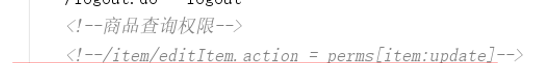
- 用户在认证通过后，请求/item/editItem.action
- 被permissionsAuthorizationFilter拦截，发现需要“item:edit”权限
- permissionsAuthorizationFilter调用realm中的doGetAuthorizationInfo获取数据库中正确的权限
- permissionsAuthorizationFilter对item:edit和从realm中获取权限进行对比，如果“item：edit”在realm返回的权限列表中，授权通过
问题总结
在applicationContext-shiro.xml中配置过滤器连接，需要将全部的url和权限对应起来进行配置，比较麻烦不方便使用
（1）可通过注解方式授权
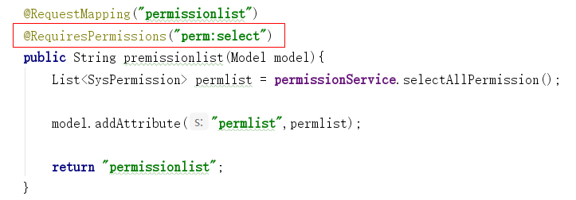
（2）在springmvc.xml中配置shiro注解支持，可在controller层中使用shiro注解配置权限
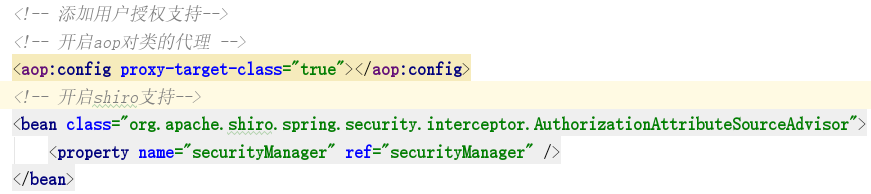
（3）通过jsp标签方式授权
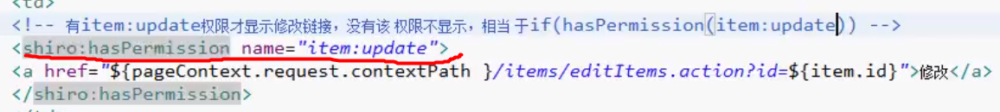
（4）授权测试
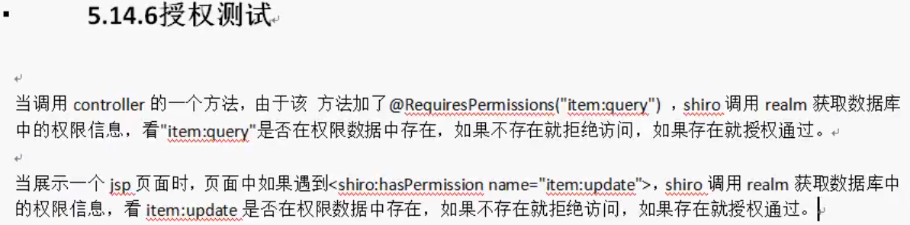
- 每次授权都要通过realm查询数据库，对于系统性能有很大影响，可通过shiro缓存解决
Shiro中提供了对认证信息和授权信息的缓存，shiro默认是关闭认证信息缓存的，对于授权信息的缓存shiro默认开启的。主要研究授权信息缓存，因为授权的数据量大。
（1）Shiro缓存流程
当用户认证通过
该用户第一次授权：调用realm查询数据库
该用户第二次授权：不调用realm查询数据库，直接从缓存中取出授权信息（权限标识符）
（2） 使用ehcache
1. 配置cacheManager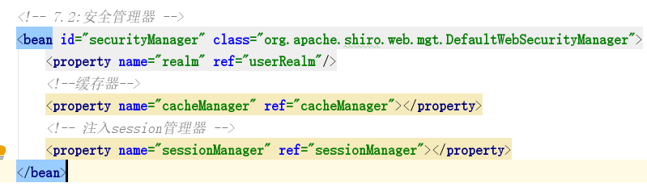
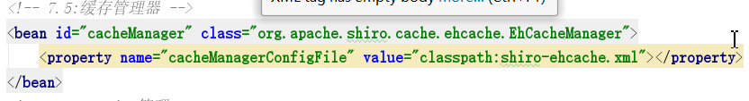
- 配置cacheManager
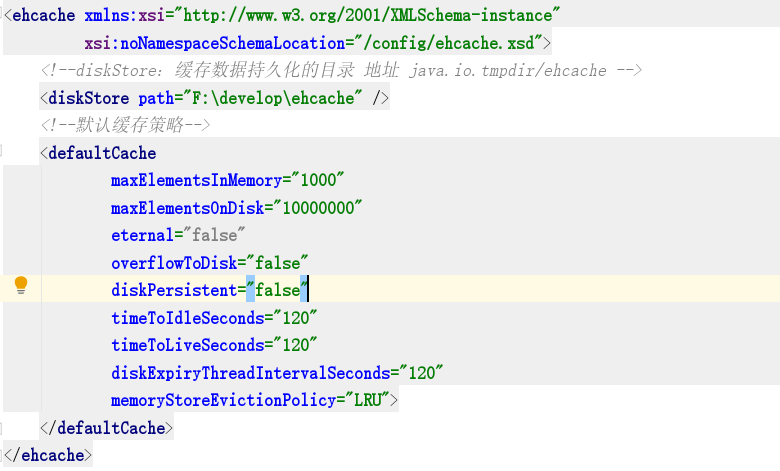
缓存清空
如果用户正常退出，缓存自动清空
如果用户非正常退出，缓存自动清空
如果修改了用户的权限，而用户不退出系统，修改的权限无法立即生效。
需要手动进行编程实现：
在权限修改后调用realm的clearCache方法清空缓存。
下边的代码正常开发时要放在service中调用
在service中，权限修改后调用下面的方法。
在realm中定义clearCache方法
//清除缓存
public void clearCached() {
PrincipalCollection principals = SecurityUtils.getSubject().getPrincipals();
super.clearCache(principals);
}sessionManager
和shiro整合后，使用shiro的session管理，shiro提供sessionDao操作会话数据
配置sessionManager
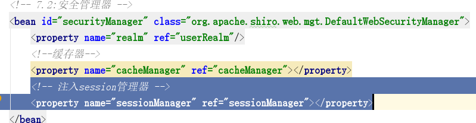
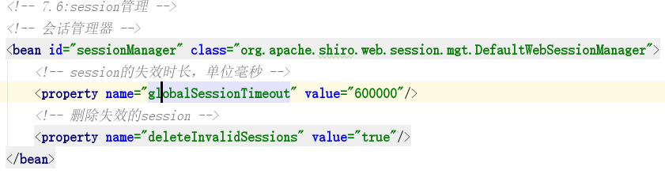
验证码
思路
Shiro使用FormAuthenticationFilter进行表单认证，验证校验的功能应该加在FormAuthenticationFilter中，在认证之前进行验证码校验
需要一个FormAuthenticationFilter的子类，继承FormAuthenticationFilter，改写它的认证方法，在认证之前进行验证码校验
自定义FormAuthenticationFilter
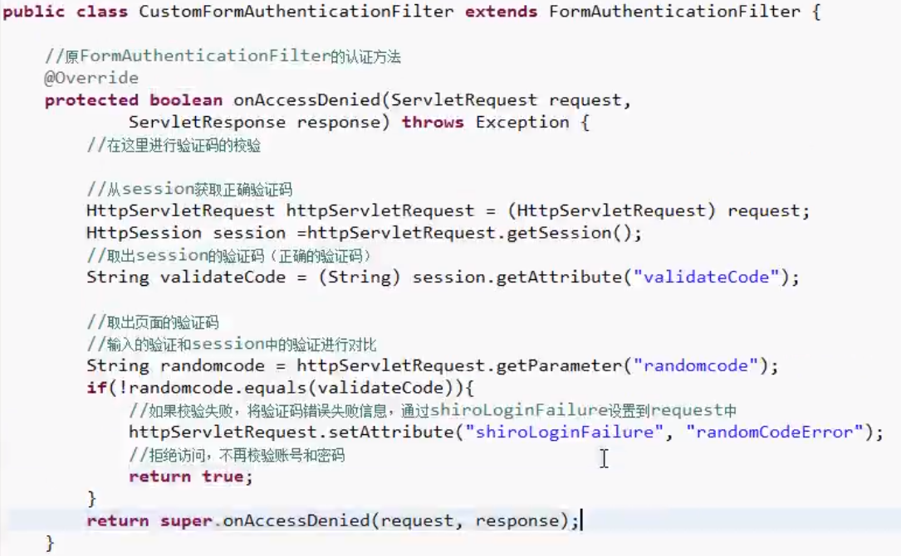
配置FormAuthenticationFilter
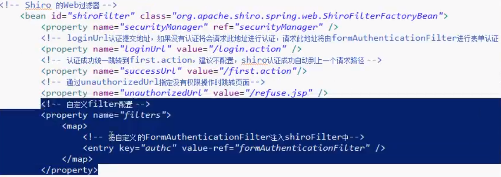
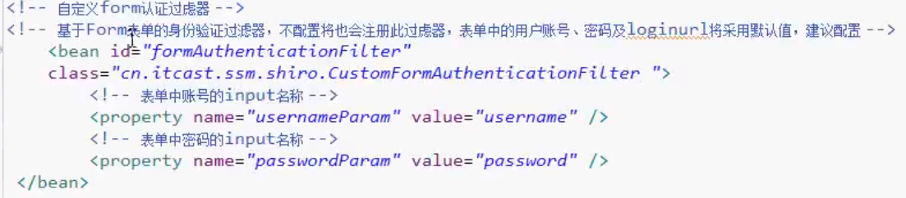
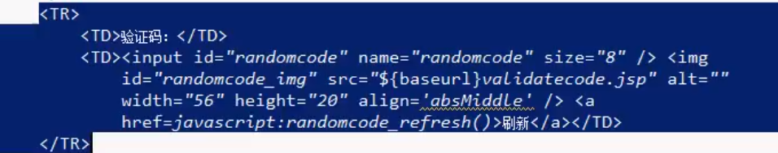
设置记住我功能（使用userFilter）
如果设置记住我，则下次访问某些url时不用登陆，将记住我即可访问的地址配置让UserFilter拦截
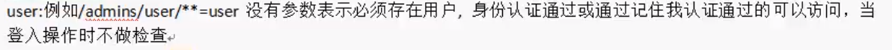
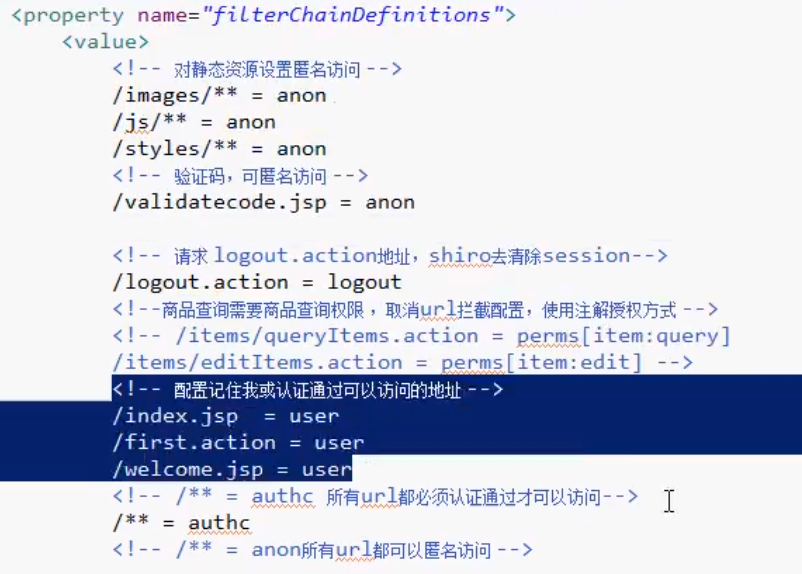
用户身份实现java.io.Serializable接口（用于存入cookie）
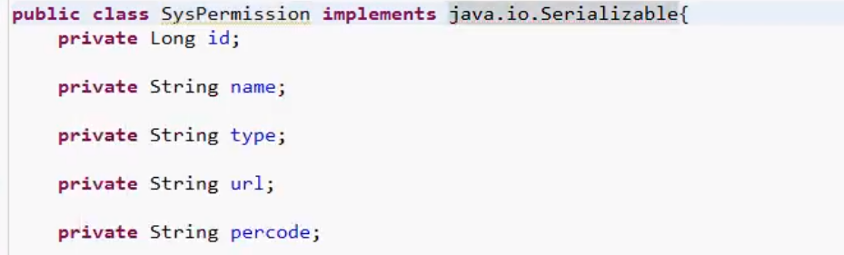
配置rememberManager
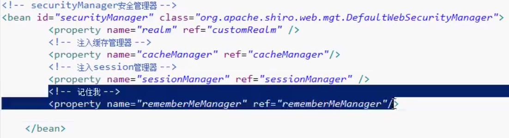
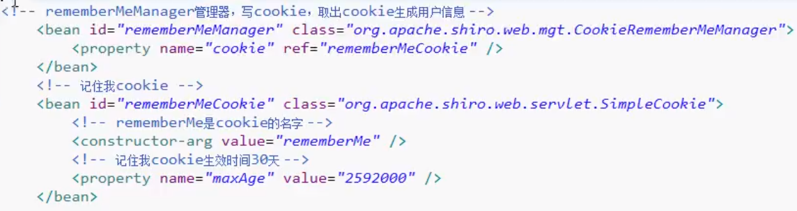
添加rememberme界面
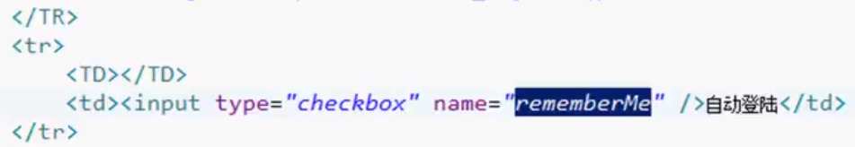
配置rememberMe的input名称
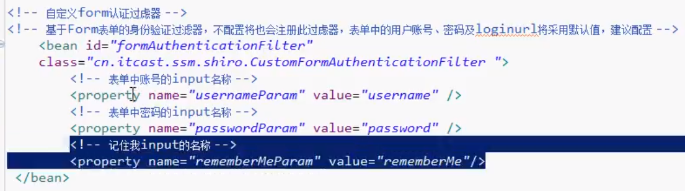
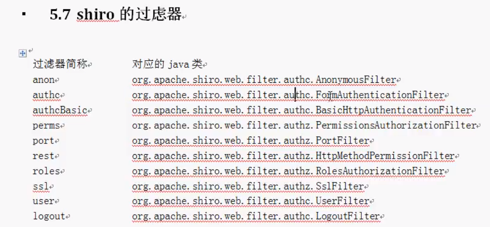